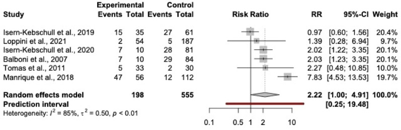
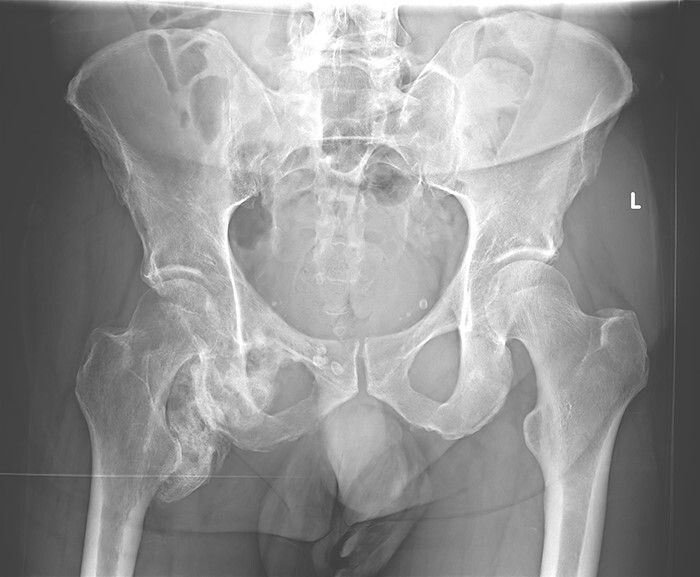
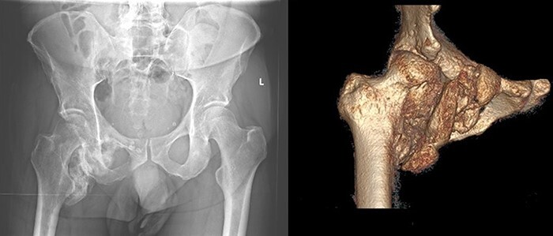
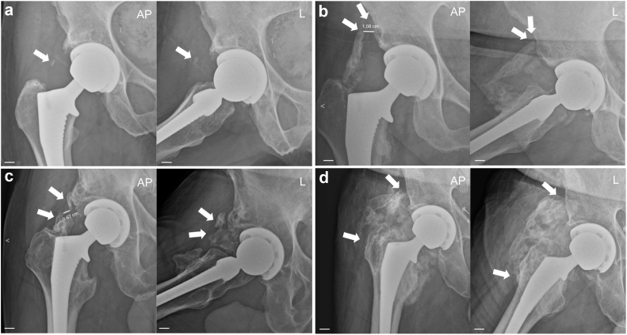
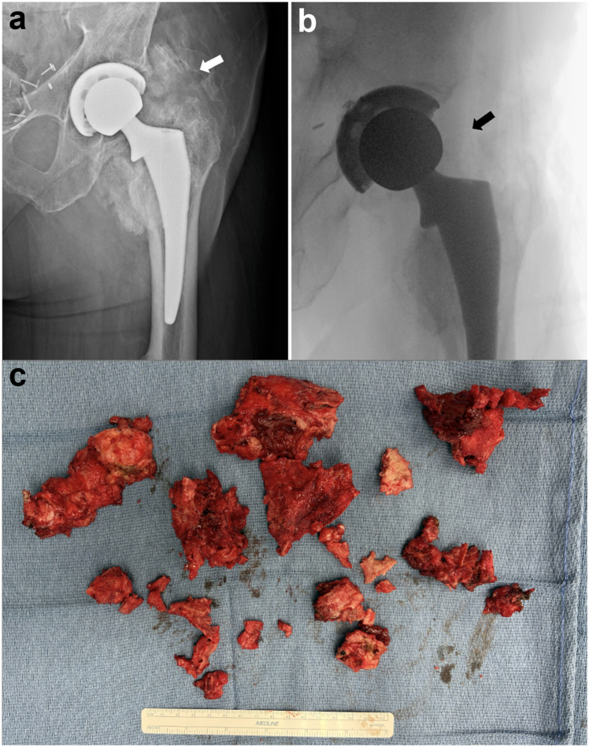

6141 — Vôi hóa mô mềm quanh khớp háng nhân tạo: phân độ Brooker, dự phòng & khi nào cắt bỏ / Heterotopic ossification after total hip arthroplasty
Tags: pattern:voi-hoa-quanh-khop pattern:tao-xuong-lac-cho pattern:han-che-van-dong pattern:day-co-quanh-khop vung:khop-hang vung:co-xuong vung:mo-mem score:Brooker protocol:X-quang-khop-hang protocol:CT-khop-hang protocol:NSAID-du-phong protocol:xa-tri incidentaloma:khong
Mức chắc chắn (certainty): tổng hợp y văn (literature synthesis) — ghép tổng quan HO sau THA (Kayani B, Wignadasan W, Fontalis A, Haddad FS. Bone Joint Res 2025;14, PMC12013453), tổng quan theo đường vào trước (Buchanan C, Culler MW, Poursalehian M, Anderson L, Yun AG, Heckmann ND. Arthroplast Today 2026;40:102110, PMC13486362), đoàn hệ chuôi ngắn đường vào trước (Soltani Farsani A et al., JB JS Open Access 2025;10, PMC12622617), thời điểm "chín" của HO (Willburger RE et al., J Orthop Surg Res 2022;17, PMC8898402), mạng lưới so sánh NSAID–xạ trị (Yang F et al., Front Pharmacol 2025;16:1601349, PMC12134758), meta PJI–HO (Pulik Ł et al., BMC Musculoskelet Disord 2025;26, PMC12333120) và ca HO khổng lồ quanh háng (Ramón R et al., J Hip Preserv Surg 2024;11, PMC11272633).
Điểm chốt của bài: HO là tạo xương lạc chỗ trong mô mềm, không phải "vôi hóa mô mềm" đơn thuần — nên chỉ thấy trên X-quang sau khi khoáng hóa, khoảng 6 tuần, và chín hoàn toàn sau 3 năm. Chỉ Brooker III–IV được coi là "có ý nghĩa lâm sàng" theo cách nói cũ, nhưng dữ liệu mới cho thấy ngay Brooker I–II cũng làm WOMAC xấu hơn. Câu hỏi thực hành không phải "có HO không" mà là "có cần mổ không" — và mổ chỉ khi đã chín ≥ 6 tháng + còn hạn chế chức năng, vì cắt sớm tái phát cao.
1. Tổng quan — vì sao mô mềm quanh khớp háng "mọc xương"
- Bệnh học: sau mổ, tổn thương cơ–mô mềm + máu tụ tạo môi trường viêm: đại thực bào/lympho giải phóng BMP-2, TGF-β, VEGF, kèm thiếu oxy mô → tế bào tiền tạo xương (osteoprogenitor) tại chỗ và từ tủy lưu hành biệt hóa theo đường sụn–xương (chondro-osteogenesis) → ổ xương lạc chỗ có vỏ và tủy, liên tục vỏ–tủy với xương lành.
- TẠI SAO X-quang "âm tính" 4–6 tuần đầu: hình ảnh chỉ xuất hiện khi có khoáng hóa hydroxyapatit đủ dày; giai đoạn đầu tổn thương là sụn/mô xơ (20–60 HU) nên không cản quang. Vì vậy phim ở tuần 2 bình thường không loại trừ HO — dấu hiệu X-quang sớm nhất khoảng 6 tuần, rõ ở 3 tháng.
- TẠI SAO cần 3 năm mới "chín": theo dõi 75 bệnh nhân (etoricoxib 90 mg/ngày dự phòng) với phim ở 3 tháng, 1, 3, 5, 10 năm: Brooker I–II gặp nhiều hơn III, còn tăng bậc tiếp tục tới 3 năm; sau 3 năm, HO không tiến triển thêm ở bất kỳ ca nào (PMC8898402).
- Số liệu nền phải nhớ:
- Tỉ lệ chung rất rộng: 8–90% sau THA, 17–100% sau gãy ổ cối, 18–50% sau chấn thương não — vì phụ thuộc đường mổ, cách chụp, thời điểm đọc và định nghĩa (PMC12013453).
- Đường vào trước (DAA) — "đường mổ ít HO nhất": 348 háng DAA + chuôi ngắn không cement: HO 18,1% — Brooker I 12,4%, II 3,0%, III 3,0%, IV 0%; ngay HO độ thấp (I–II) cũng có WOMAC tệ hơn (p < 0,001) (PMC12622617).
- Yếu tố nguy cơ: nam OR 2,11 (meta 2015); mổ hai bên, viêm cột sống dính khớp (AS), cứng khớp háng trước mổ; implant có cement > không cement; mổ > 90 phút, dẫn lưu kéo dài; tuổi cao liên quan trong nhiều loạt nhưng không nhất quán (PMC13486362).
- HO và nhiễm khớp nhân tạo liên quan hai chiều: gộp 6 nghiên cứu / 753 quan sát / 186 biến cố: RR 2,22 (1,00–4,91), p = 0,0497 cho HO ở người có PJI; cơ chế được đề xuất là PAMP vi khuẩn qua TLR–NF-κB thúc đẩy tạo xương (PMC12333120). Vì vậy HO mới xuất hiện ở ca "vô khuẩn" phải gợi ý nhiễm (bài 6110).

Gộp 6 nghiên cứu: RR 2,22 (1,00–4,91) cho HO ở nhóm PJI so với chứng, nhưng I² = 85% và khoảng dự báo 0,25–19,48 — nghĩa là hướng liên quan rõ, độ lớn còn bất định. Nguồn: Pulik Ł, Łęgosz P, Brzóska E, Mierzejewski B, Grabowska I, Ciemerych MA, Hube R. BMC Musculoskelet Disord 2025;26 (PMC12333120, Fig. 2), CC BY-NC-ND 4.0.- TẠI SAO vị trí HO phụ thuộc đường mổ: đường bên (lateral) bóc tách cơ mông → HO mặt ngoài, quanh mấu chuyển lớn; DAA đi giữa cơ may–căng mạc đùi → HO phía trước khớp, rất dễ bỏ sót trên phim AP vì bị cổ chuôi/ổ cối che; đường sau → HO sau, quanh ụ ngồi (PMC13486362).
2. Mẫu hình + chẩn đoán phân biệt theo vị trí (gamut)
- Theo vị trí — đọc trên AP + nghiêng/CT:
- Ngoài – trên (cơ mông, mấu chuyển lớn): hay gặp sau đường bên; dễ nhầm mảnh xương mấu chuyển hoặc cement sót.
- Trước (cơ may–căng mạc đùi, trước ổ cối): đặc trưng DAA; gần như vô hình trên AP, phải xem nghiêng/CT — đây là lý do "DAA ít HO" có thể một phần do chụp.
- Trong (cơ chậu–thắt lưng, sàn ổ cối): HO trong khung chậu, có thể chèn ép mạch chậu/niệu quản; khó thấy trên phim thẳng.
- Sau (ụ ngồi, cơ mông lớn): hạn chế duỗi–xoay ngoài, dễ nhầm myositis ossificans.
- Theo hình thái — 3 kiểu cần phân biệt:
- HO trưởng thành: bờ rõ, có vỏ xương + bè xương, liên tục vỏ–tủy với xương chủ (dấu chốt phân biệt với vôi hóa loạn dưỡng).
- HO non (sớm): bờ mờ, không có bè xương, có thể phù mô quanh — giai đoạn này không mổ.
- Vôi hóa không phải xương: viêm gân vôi hóa, calcinosis tumoral, mảnh xương/cement — không có vỏ–tủy liên tục.
- Gamut chẩn đoán phân biệt quanh THA:
- Mảnh xương mấu chuyển lớn bị bóc tách (thường bờ sắc, khớp với ổ khuyết ở mấu chuyển).
- Cement sót (cản quang rất mạnh, không bè xương, thường bờ tròn nhẵn).
- Myositis ossificans (tiền sử chấn thương cơ, bờ "vỏ trứng", có thể teo dần).
- Viêm gân vôi hóa (vôi hóa dạng vô định hình, trong gân, không vỏ xương).
- U sụn–xương (osteochondroma) (liên tục vỏ–tủy nhưng có cuống và sụn bọc đầu, thường có từ trước).
- Sarcoma tạo xương/viêm xương–tủy (phá xương, phản ứng màng xương, mô mềm không vôi hóa kiểu xương trưởng thành).
- HO "do nhiễm" — HO mới ở ca tưởng vô khuẩn: RR 2,22 với PJI (PMC12333120).

Bệnh nhân sau thời gian dài ở ICU, 6 tháng: hình ảnh cốt hóa còn mờ, chưa có bè xương rõ quanh háng phải — giai đoạn HO non, chưa nên mổ. Nguồn: Ramón R, Holguín E, Ribas M, Al Hussin N, Ezechieli M. J Hip Preserv Surg 2024;11 (PMC11272633, Fig. 1), CC BY 4.0.
Cùng ca ở 10 tháng: khối cốt hóa dày, bờ rõ, có bè xương, dựng hình 3D cho thấy khối xương lạc chỗ ôm mặt trong–dưới khớp háng — đây là lúc đánh giá khối đã "chín" và lập kế hoạch cắt bỏ nếu còn hạn chế vận động. Nguồn: Ramón R et al. (PMC11272633, Fig. 2), CC BY 4.0.3. Bảng so sánh phân biệt (ma trận đối chiếu)
| Thực thể (entity) | Hình ảnh điển hình | Chốt vào (rule-in) | Chốt loại (rule-out) | Gợi ý xác nhận |
|---|---|---|---|---|
| HO trưởng thành | Khối cản quang bờ rõ, có vỏ + bè xương, liên tục vỏ–tủy với xương chủ; vị trí đúng đường mổ | Vỏ–tủy liên tục + bờ rõ + không phá xương | Bờ mờ, không bè xương, phù mô → HO non hoặc tổn thương khác | X-quang 2 bình diện; CT khi cần mổ |
| HO non (sớm) | Mờ, dạng đám, không bè xương, có thể phù mô quanh; xuất hiện 3–6 tuần | Tiền sử mổ < 3 tháng + đau/hạn chế + đám cản quang mờ | Đã có vỏ–tủy rõ → đã trưởng thành | Chụp lại 3 tháng; không mổ sớm |
| Mảnh xương mấu chuyển | Mảnh xương bờ sắc, khớp với ổ khuyết ở mấu chuyển lớn, có bè xương | Ổ khuyết tương ứng ở mấu chuyển + tiền sử mổ | Khối tách rời, không ổ khuyết → HO | So phim ngay sau mổ; CT |
| Cement sót | Cản quang rất mạnh, đồng nhất, bờ tròn nhẵn, không bè xương | Mật độ kim loại/cement + không bè xương | Có bè xương/vỏ → HO | X-quang; CT (HU rất cao) |
| Myositis ossificans | Khối "vỏ trứng" trong cơ, bờ ngoài đậm hơn trong, có thể teo theo thời gian | Tiền sử chấn thương cơ + bờ ngoài đậm | Liên tục vỏ–tủy với xương → HO/osteochondroma | Theo dõi 3–6 tháng |
| Viêm gân vôi hóa | Vôi hóa vô định hình trong gân, không vỏ xương, đau khu trú | Đau khi vận động + vôi hóa trong gân | Có vỏ–bè xương → HO | Siêu âm; X-quang |
| U sụn–xương | Cuống xương + sụn bọc đầu, vỏ–tủy liên tục, thường có từ trước | Cuống + sụn bọc + không thay đổi theo thời gian | Không cuống, xuất hiện sau mổ → HO | So phim cũ; MRI |
| HO + PJI (bài 6110) | HO mới/xuất hiện sau 3 năm, kèm đường sáng, dịch, phù mô | HO mới + CRP/ESR tăng + dịch khớp bất thường | HO ổn định, không dịch, CRP bình thường | Chọc hút dịch; cấy; RR 2,22 |
Ba câu phải trả lời trước khi nói "HO"
- Có vỏ–tủy liên tục không? Có = xương lạc chỗ thật (HO/osteochondroma); không = vôi hóa/mảnh vụn.
- Có ổ khuyết tương ứng ở xương chủ không? Có = mảnh xương bị bóc; không = HO.
- Xuất hiện sau mổ bao lâu? < 6 tuần** có thể còn **âm tính**; **> 3 năm mà mới mọc = chấn thương mới hoặc nhiễm.
4. Protocol chụp + hệ phân độ/điểm chuẩn hóa
- X-quang: AP khung chậu + AP và nghiêng khớp háng; chụp 6 tuần, 3 tháng, 1 năm ở người nguy cơ cao. Nghiêng là bắt buộc với DAA vì HO phía trước gần như không thấy trên AP.
- CT: lát mỏng ≤ 1 mm + dựng 3D khi lập kế hoạch cắt bỏ — xác định quan hệ với mạch đùi, thần kinh tọa, bàng quang, và khối có vỏ–tủy liên tục. Siêu âm phát hiện HO sớm hơn X-quang; xạ hình/PET dương tính sớm nhưng không đặc hiệu (viêm cũng dương tính).
- Phân độ Brooker (AP, khớp háng):
- I: đảo xương rời trong mô mềm quanh khớp.
- II: gai xương từ khung chậu hoặc xương đùi, khoảng cách giữa hai bờ xương > 1 cm.
- III: gai xương với khoảng cách < 1 cm (gần chạm nhau).
- IV: dính khớp (ankylosis) — cầu xương liên tục.
- Ý nghĩa: III–IV là nhóm hạn chế vận động rõ; II đã có thể giảm gấp/dạng; nhưng I–II vẫn làm WOMAC xấu hơn trong đoàn hệ DAA (PMC12622617).
- Dự phòng (chọn theo nguy cơ):
- NSAID: indomethacin 25 mg × 3/ngày trong 3–6 tuần là chuẩn cũ; các phác đồ 25 mg × 3/ngày × 2 tuần, 50 mg × 2/ngày × 6 tuần cũng hiệu quả; 7 ngày không kém 14 ngày. Meta: NSAID giảm HO, OR 2,8 (1,9–4,0) so với giả dược (PMC12013453).
- So sánh mạng 17 RCT / 3.014 bệnh nhân: OR so với chứng — diclofenac 0,06, xạ trị 0,08, indomethacin 0,13; SUCRA: diclofenac 78,0% > etoricoxib 71,6% > xạ trị 67,3% > naproxen 66,7% > indomethacin 53,2% > celecoxib 38,8% > ibuprofen 18,6% (PMC12134758).
- Xạ trị: 700–800 cGy liều duy nhất, trước mổ trong 24 giờ hoặc sau mổ trong 72 giờ; 400 cGy kém hơn 700 cGy (57,8% vs 75,0% không tăng bậc, p = 0,027); 550 vs 700 cGy: 63% vs 10%; 500 vs 1.000 cGy: không khác (p = 0,086) (PMC13486362).
- Aspirin 325 mg × 2/ngày × 4–6 tuần có thể giảm HO (dùng kèm dự phòng huyết khối); ketorolac: 0/152 ca HO có ý nghĩa lâm sàng vs 7,3% chứng (PMC13486362).
- Tranexamic acid và hạn chế dẫn lưu kéo dài được xem là biện pháp bổ trợ.
- Cắt bỏ (excision): chỉ khi HO đã chín — ≥ 6 tháng sau khi bắt đầu cốt hóa; sau chấn thương 6–9 tháng, sau chấn thương não 18 tháng; cắt trước 6 tháng tăng tái phát. Ở bệnh nhân đã gãy ổ cối, cắt HO có tới 1/3 biến chứng (gãy cổ xương đùi, hoại tử chỏm, tổn thương thần kinh tọa) (PMC12013453). Sau cắt: dự phòng lại bằng NSAID ± xạ trị (ví dụ 700 cGy ngày 1 + indomethacin 50 mg/ngày × 2 tuần).
flowchart TD
A["THA + đau hoặc hạn chế vận động"] --> B{"X-quang AP + nghiêng: có cốt hóa quanh khớp?"}
B -->|"Không"| C["Chụp lại ở 6 tuần và 3 tháng nếu nguy cơ cao"]
B -->|"Có"| D["Phân độ Brooker I–IV"]
D --> E{"Brooker III–IV hoặc hạn chế chức năng?"}
E -->|"Không"| F["Theo dõi lâm sàng, không mổ"]
E -->|"Có"| G{"Đã chín ≥ 6 tháng?"}
G -->|"Chưa"| H["Chờ chín + dự phòng NSAID hoặc xạ trị"]
G -->|"Rồi"| I["CT 3D lập kế hoạch cắt bỏ"]
I --> J["Cắt bỏ + dự phòng tái phát"]
D --> K{"HO mới xuất hiện sau 3 năm?"}
K -->|"Có"| L["Nghĩ chấn thương mới hoặc PJI — RR 2,22, bài 6110"]

Brooker I (a: đảo xương rời), II (b: gai xương cách nhau > 1 cm), III (c: khoảng cách < 1 cm), IV (d: cầu xương/dính khớp). Mũi tên chỉ các gai xương; cột L là phim nghiêng — cần thiết để thấy HO phía trước ở đường vào trước. Nguồn: Buchanan C, Culler MW, Poursalehian M, Anderson L, Yun AG, Heckmann ND. Arthroplast Today 2026;40:102110 (PMC13486362, Fig. 1), CC BY-NC-ND 4.0 — nguyên bản, không cắt/ghép.
Brooker IV: (a) cầu xương quanh khớp, (b) huỳnh quang trong mổ sau khi cắt bỏ, (c) khối xương lạc chỗ lấy ra. Đây là mức độ duy nhất mà cắt bỏ gần như chắc chắn phải làm nếu còn triệu chứng. Nguồn: Buchanan C et al. (PMC13486362, Fig. 2), CC BY-NC-ND 4.0.5. Biến thể bình thường và cạm bẫy
- HO phía trước sau DAA có thể hoàn toàn không thấy trên AP — đừng kết luận "không HO" nếu chỉ có một phim thẳng; nghiêng hoặc CT mới đủ.
- "Đảo xương" nhỏ cạnh mấu chuyển sau mổ có thể là mảnh xương bị bóc chứ không phải HO — tìm ổ khuyết tương ứng ở xương chủ.
- HO độ thấp vẫn có triệu chứng: đừng dùng ngưỡng "chỉ III–IV mới quan trọng" để bỏ qua bệnh nhân WOMAC cao, hạn chế gập háng nhưng ảnh chỉ Brooker I–II.
- HO "mới" sau 3 năm = không phải tiến triển tự nhiên: nghĩ chấn thương mới, di căn, hoặc PJI (HO tăng 2,22 lần ở PJI).
- Đừng cắt HO non: bờ mờ, chưa có bè xương, < 6 tháng → tái phát cao; chờ chín (tới 3 năm ở một số ca) rồi mới mổ.
- NSAID ở bệnh nhân gãy ổ cối: giảm HO nhưng tăng nguy cơ khớp giả (nonunion) — cân nhắc xạ trị liều duy nhất hoặc thời gian NSAID ngắn.
- Xạ trị ở người trẻ: 700–800 cGy là liều thấp nhưng vẫn cần cân nhắc sinh sản/tổn thương thứ phát; 400 cGy không đủ.
- Dẫn lưu kéo dài và mổ > 90 phút là yếu tố liên quan — không phải "nguyên nhân chắc chắn"; đừng quy kết một yếu tố đơn lẻ.
6. Tự lượng giá — Blind Quiz
Ca 1 — Nam 66 tuổi, THA 2 năm, háng "cứng như khối đá", phim AP thấy cầu xương quanh khớp.
- Câu hỏi: Phân độ Brooker? Có nên mổ ngay không? Cần chuẩn bị gì trước mổ?
Bấm để hiện đáp án
- Findings: cầu xương liên tục giữa khung chậu và xương đùi → Brooker IV.
- Chẩn đoán: HO độ IV, hạn chế vận động nặng; đây là nhóm gần như chắc chắn phải cắt nếu còn triệu chứng.
- Trước mổ: xác nhận đã chín ≥ 6 tháng, CT 3D đánh giá quan hệ với mạch đùi/thần kinh tọa, chuẩn bị dự phòng tái phát (NSAID ± 700 cGy).
- Nguồn ảnh: Buchanan C et al. (PMC13486362, Fig. 2), CC BY-NC-ND 4.0.
Ca 2 — Bệnh nhân 6 tháng sau ICU, đau và hạn chế gập háng phải, phim mờ nhẹ quanh háng.
- Câu hỏi: Mô tả tổn thương? Đã đủ chín để mổ chưa? Theo dõi thế nào?
Bấm để hiện đáp án
- Findings: đám cốt hóa mờ, chưa có bè xương rõ ở mặt trong–dưới khớp háng phải → HO non.
- Chẩn đoán: HO giai đoạn sớm — chưa mổ; chờ chín (theo dõi tới 3 năm nếu cần) và dự phòng NSAID nếu còn trong cửa sổ nguy cơ.
- Theo dõi: phim 3–6 tháng/lần; khi khối có vỏ–bè xương và hết tiến triển mới cân nhắc cắt.
- Nguồn ảnh: Ramón R et al. (PMC11272633, Fig. 1), CC BY 4.0.
Ca 3 — Cùng bệnh nhân trên, 10 tháng sau: khối đã dày, bờ rõ; anh/chị quyết định gì?
- Câu hỏi: Khối đã "chín" chưa? Dấu hiệu nào chứng minh? Nếu cắt, nguy cơ chính là gì?
Bấm để hiện đáp án
- Findings: khối dày, bờ rõ, có bè xương, 3D cho thấy ôm mặt trong–dưới khớp → HO trưởng thành.
- Chẩn đoán: đã đủ điều kiện cắt bỏ nếu còn hạn chế chức năng; ca này được mổ qua đường trong Ludloff cải tiến.
- Nguy cơ: chảy máu, tổn thương mạch đùi/thần kinh bịt–tọa, tái phát; cần dự phòng sau mổ và theo dõi chức năng.
- Nguồn ảnh: Ramón R et al. (PMC11272633, Fig. 2), CC BY 4.0.
Bài liên quan chéo
- 6110 – Nhiễm trùng quanh khớp nhân tạo (PJI) sau THA — HO mới + PJI: RR 2,22
- 6140 – Lỏng vô khuẩn quanh khớp háng nhân tạo — HO che đường sáng, dễ nhầm khuyết xương
- 6107 – Thay khớp háng ở người sống sót ung thư nhi
- 645 – Vỡ khung chậu ở trẻ — HO sau gãy ổ cối 17–100%
- 300 – Tổng quan Hệ Cơ – Xương – Khớp
- 600 – Tổng quan Nhi khoa
Ảnh
- Tên file:
6141_voi-hoa_Modality_SourceID.jpg. Nguồn + giấy phép từng ảnh trongimages/CREDITS.md. - Bài không có ảnh composite vì 2 ảnh phân độ Brooker là CC BY-NC-ND (không được cắt/ghép).
Không dùng để chẩn đoán độc lập khi chưa có người hướng dẫn.